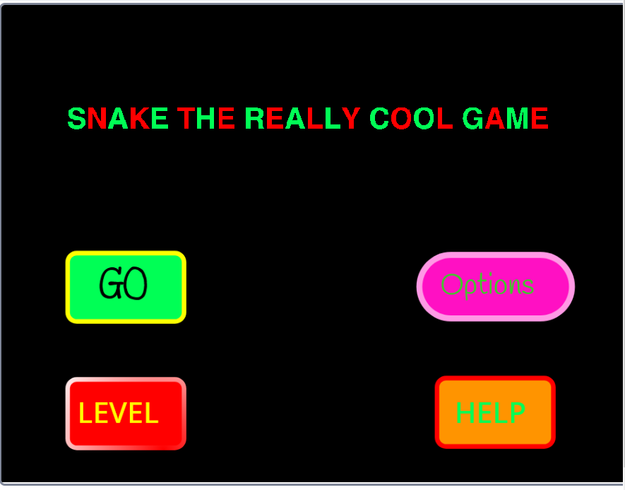

So this is the page where I talk a bit about my past and my expirence with computing.
Got into a class called Games Design during Year 8. This involved learning various game design philosphies as well as learning to use Scratch . My first game I designed was a snake copy, although it had its own unique original ideas, and it also taught me to work with a rudimentary form of arrays. Click the image below to play my game!
After two years of the game design class, there was no option avaliable for it anymore so I ended up doing IST. In IST we learnt all the general computer stuff but at the end of the year we learnt Visual Basic and had to make a Tic Tac Toe game in VB (we did all this in Microsoft Excel). This was my first crack at some real programming.
This year I enrolled in two IT subjects for my HSC, these being Infomation Processes & Technology, and Software Deisgn and Development. IPT wasn't all that useful, however in SDD we had to take part in a major project. This major project involved using JavaScript, HTML and CSS to make anything we wanted (albeit abiding by the theme of "Data Proccessing". Due to my passion as an Ice Hockey player I decided to do something with that so I made an NHL Game Predictor. It used the NHL's official API to gather in data and then make predictons on games accordingly. Link to the project here. If you want to actually run it, then git clone the repository onto your local machine, and then open the nhlMain.html file.
As this year was my final year of HSC the dynamic wasn't all too different from last year. However, the major project for SDD was just a bit of a step up. So I decided I wanted to be more structured with what I made. The application created involved the use of a front-end, back-end structure where I had a Node.js server running Express.js. This server would then send out HTML pages by using a templating enginge called Pug. This combined with the use of database software - MongoDB allowed my to create my app - uShop. Link to the project is here.
I got a job as a Full Stack Developer at Saasyan. Just been working on projects there - mainly with VueJs, NodeJS, Python and MySQL.